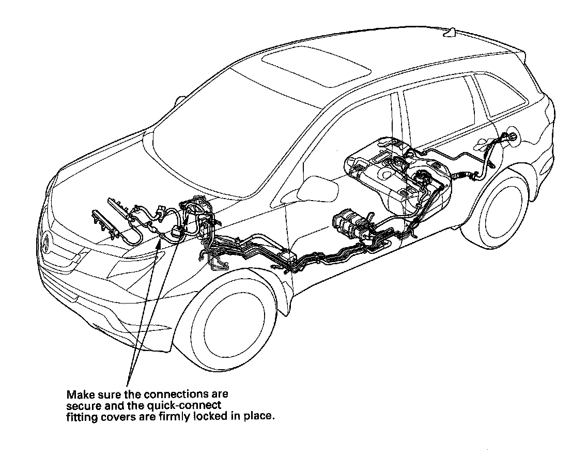
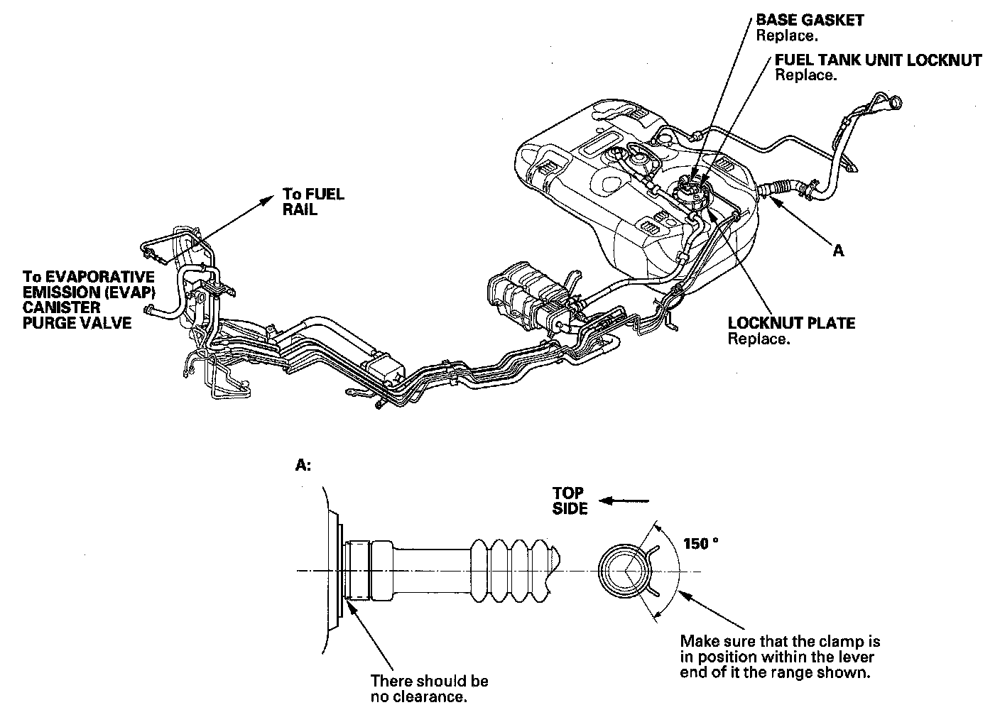

Operation CHARM
: Car repair manuals for everyone.
Home
>>
Acura
>>
2007
>>
MDX V6-3.7L
>>
Repair and Diagnosis
>>
Powertrain Management
>>
Fuel Delivery and Air Induction
>>
Fuel Return Line
>>
Testing and Inspection
Fuel Return Line: Testing and Inspection
Fuel Line Inspection

Check the fuel system lines and hoses for damage, leaks, and deterioration. Replace any damaged parts.

Check all clamps, and retighten if necessary.